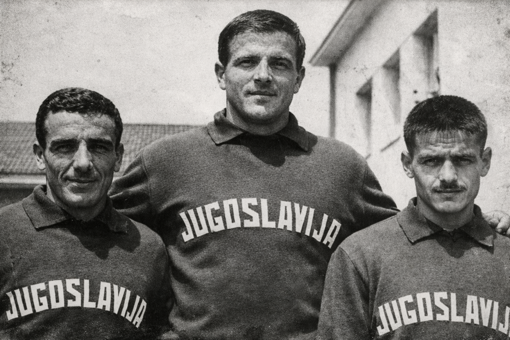

Hayatının Başlangıcı
Sami Pehlivan, 1940 yılında dönemin Yugoslavya’sına bağlı Makedonya bölgesinde,
Pirlepe kentine bağlı Desovo köyünde dünyaya geldi. Beş kardeşli bir ailenin
ikinci çocuğuydu. Çocukluğu Balkanlar’ın kırsal yaşamı içinde geçti.

1950’ler · Yugoslavya
Güreşle tanışması çok erken yaşlarda oldu; köy düğünlerinde, bayramlarda
ve yerel etkinliklerde yapılan yağlı güreşler, onun için yalnızca bir spor
değil, hayatın doğal bir parçasıydı.
Güreşe İlk Adımlar
Genç yaşlarda gösterdiği yetenek, onu köy meydanlarından daha büyük
müsabakalara taşıdı. 1959 yılında Üsküp’te düzenlenen seçme müsabakalarına
katıldı ve burada minder güreşiyle tanıştı.

Yugoslavya Milli Takımından Arkadaşları
Türkiye Yılları
1960 yılında evlendi. Kısa süre sonra ailesinin aldığı kararla 1961 yılında
Türkiye’ye göç etti. İstanbul Bayrampaşa’ya yerleşen Pehlivan ailesi için bu
dönem yeni bir hayatın başlangıcı oldu.
Sami Pehlivan, Sümerspor Kulübü bünyesinde güreş kariyerini sürdürdü.
1964 yılında İstanbul Şampiyonası’nda birinci oldu.
1965 yılında Konya’da düzenlenen Türkiye Güreş Şampiyonası’nda
63,5 kilogram kategorisinde birincilik elde ederek millî takıma seçildi.
Akdeniz Oyunları – 1967
1967 yılında Tunus’ta düzenlenen Akdeniz Oyunları’nda serbest stil
63 kilogram kategorisinde altın madalya kazandı.
Bu başarı, spor hayatındaki en önemli dönüm noktalarından biri oldu.
Almanya Yılları
1968 yılında ailesiyle birlikte Almanya’ya yerleşti.
Bavyera eyaletine bağlı Aschaffenburg kentinde yaşamını sürdürdü.
Çalışma hayatıyla birlikte güreşten kopmadan,
yerel kulüpler bünyesinde müsabakalara katıldı.
Son Yıllar
Uzun yıllar Almanya’da yaşadıktan sonra 2004 yılında Türkiye’ye kesin dönüş yaptı.
Beş çocuk babası olan Sami Pehlivan, yaşamının ilerleyen yıllarını
İstanbul’da geçirdi.
24 Ekim 2020 tarihinde İstanbul Bayrampaşa’daki evinde hayatını kaybetti.